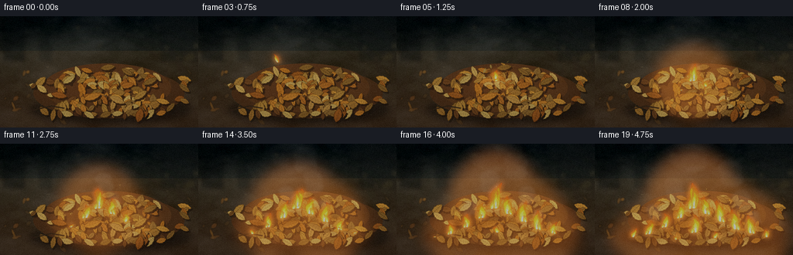
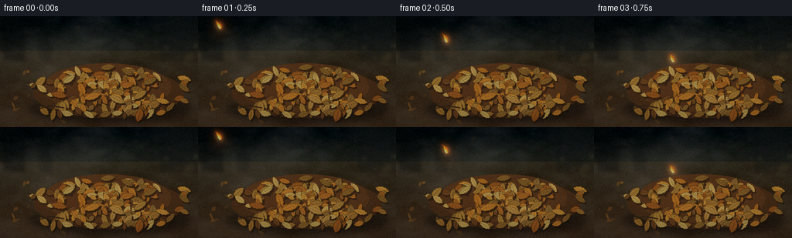

CODING AGENTS AS PIXEL WORLD MODELS
traex/DeepSeek-V4.1-Flash · phygen_142
点击播放 · 原生 RGB 像素
逐轮保存的候选
回放视频、检查图与代码变化。
每份候选均可单独播放。实际图片检查记录在下方工具轨迹中。
候选 01播放与检查图
点击播放 · 原生 RGB 像素


展开代码变化
--- 上一保存版本
+++ 本次保存版本
@@ -0,0 +1,820 @@
+"""Procedural RGB generation for: a burning match thrown into dry leaves."""
+
+from __future__ import annotations
+
+import math
+from pathlib import Path
+
+import cv2
+import numpy as np
+from PIL import Image, ImageDraw, ImageFilter
+
+import artifact_io
+
+
+CASE_DIR = Path(__file__).resolve().parent
+W, H = 256, 144
+N, FPS = 20, 4.0
+S = 4
+RW, RH = W * S, H * S
+IMPACT_T = 0.92
+
+
+def clamp(value: float, low: float = 0.0, high: float = 1.0) -> float:
+ return max(low, min(high, value))
+
+
+def smoothstep(value: float) -> float:
+ value = clamp(value)
+ return value * value * (3.0 - 2.0 * value)
+
+
+def lerp(a, b, amount: float):
+ return a + (b - a) * amount
+
+
+def p(value: float) -> int:
+ return int(round(value * S))
+
+
+def rgba(color: tuple[int, int, int], alpha: int = 255) -> tuple[int, int, int, int]:
+ return color[0], color[1], color[2], alpha
+
+
+def noise_field(rng: np.random.Generator, cells: int, octaves: int = 5) -> np.ndarray:
+ field = np.zeros((RH, RW), dtype=np.float32)
+ total = 0.0
+ weight = 1.0
+ for octave in range(octaves):
+ size = max(2, cells * (2**octave))
+ coarse = rng.random((size, size), dtype=np.float32)
+ layer = cv2.resize(coarse, (RW, RH), interpolation=cv2.INTER_CUBIC)
+ field += layer * weight
+ total += weight
+ weight *= 0.52
+ field /= total
+ field -= field.min()
+ field /= max(1e-6, field.max())
+ return field
+
+
+def rotate_points(points: np.ndarray, angle: float) -> np.ndarray:
+ c, s = math.cos(angle), math.sin(angle)
+ matrix = np.array([[c, -s], [s, c]], dtype=np.float32)
+ return points @ matrix.T
+
+
+def leaf_polygon(
+ x: float, y: float, length: float, width: float, angle: float, serration: float
+) -> list[tuple[int, int]]:
+ u = np.linspace(0.0, 1.0, 23)
+ profile = np.sin(np.pi * u) ** 0.72
+ saw = 1.0 + serration * np.sin(u * math.pi * 8.0 + 0.8)
+ half_width = width * 0.5 * profile * saw
+ local_x = (u - 0.5) * length
+ top = np.column_stack((local_x, -half_width))
+ bottom = np.column_stack((local_x[::-1], half_width[::-1]))
+ outline = np.vstack((top, bottom))
+ outline = rotate_points(outline, angle)
+ outline[:, 0] += x
+ outline[:, 1] += y
+ return [(p(px), p(py)) for px, py in outline]
+
+
+def draw_leaf(
+ draw: ImageDraw.ImageDraw,
+ x: float,
+ y: float,
+ length: float,
+ width: float,
+ angle: float,
+ color: tuple[int, int, int],
+ *,
+ shadow: bool = True,
+ serration: float = 0.07,
+ alpha: int = 255,
+) -> None:
+ if shadow:
+ shadow_poly = leaf_polygon(x + 1.7, y + 2.2, length, width, angle, serration)
+ draw.polygon(shadow_poly, fill=rgba((20, 14, 9), min(150, alpha)))
+
+ outline = leaf_polygon(x, y, length, width, angle, serration)
+ dark = tuple(max(0, int(c * 0.58)) for c in color)
+ draw.polygon(outline, fill=rgba(dark, alpha))
+
+ inset = leaf_polygon(x, y, length * 0.91, width * 0.84, angle, serration)
+ draw.polygon(inset, fill=rgba(color, alpha))
+
+ c, s = math.cos(angle), math.sin(angle)
+ direction = np.array([c, s], dtype=np.float32)
+ normal = np.array([-s, c], dtype=np.float32)
+ center = np.array([x, y], dtype=np.float32)
+ start = center - direction * length * 0.42
+ end = center + direction * length * 0.40
+ vein_color = tuple(max(0, int(c * 0.66)) for c in color)
+ draw.line(
+ [(p(start[0]), p(start[1])), (p(end[0]), p(end[1]))],
+ fill=rgba(vein_color, min(230, alpha)),
+ width=max(1, p(0.42)),
+ )
+ for side in (-1, 1):
+ for frac in (0.25, 0.42, 0.59, 0.74):
+ root = start + direction * length * frac
+ reach = length * (0.14 - frac * 0.07)
+ tip = root + normal * side * reach + direction * length * 0.07
+ draw.line(
+ [(p(root[0]), p(root[1])), (p(tip[0]), p(tip[1]))],
+ fill=rgba(vein_color, min(175, alpha)),
+ width=max(1, p(0.25)),
+ )
+ highlight = tuple(min(255, int(c * 1.26 + 13)) for c in color)
+ edge_a = center - direction * length * 0.34 - normal * width * 0.26
+ edge_b = center + direction * length * 0.24 - normal * width * 0.21
+ draw.line(
+ [(p(edge_a[0]), p(edge_a[1])), (p(edge_b[0]), p(edge_b[1]))],
+ fill=rgba(highlight, min(105, alpha)),
+ width=max(1, p(0.32)),
+ )
+
+
+def leaf_sprite(
+ rng: np.random.Generator, color: tuple[int, int, int], length: int = 76, width: int = 38
+) -> Image.Image:
+ sprite = Image.new("RGBA", (length + 18, width + 18), (0, 0, 0, 0))
+ draw = ImageDraw.Draw(sprite)
+ draw_leaf(
+ draw,
+ (length + 18) / 2,
+ (width + 18) / 2,
+ length,
+ width,
+ float(rng.uniform(-0.4, 0.4)),
+ color,
+ shadow=False,
+ serration=float(rng.uniform(0.04, 0.1)),
+ )
+ return sprite
+
+
+def make_background(rng: np.random.Generator) -> Image.Image:
+ y = np.linspace(0.0, 1.0, RH, dtype=np.float32)[:, None]
+ top = np.array([7, 13, 16], dtype=np.float32)
+ horizon = np.array([22, 24, 20], dtype=np.float32)
+ earth = np.array([50, 35, 22], dtype=np.float32)
+ far_earth = np.array([34, 31, 22], dtype=np.float32)
+
+ image = np.empty((RH, RW, 3), dtype=np.float32)
+ horizon_y = 0.31
+ blend_top = np.clip(y / horizon_y, 0.0, 1.0)
+ image[:] = top[None, None, :] * (1.0 - blend_top[..., None]) + horizon[None, None, :] * blend_top[..., None]
+ blend_ground = np.clip((y - horizon_y) / (1.0 - horizon_y), 0.0, 1.0)
+ ground_color = far_earth[None, None, :] * (1.0 - blend_ground[..., None]) + earth[None, None, :] * blend_ground[..., None]
+ image = np.where(y[..., None] >= horizon_y, ground_color, image)
+
+ broad = noise_field(rng, 5, 4)
+ fine = noise_field(rng, 18, 5)
+ texture = (broad - 0.5) * 22.0 + (fine - 0.5) * 10.0
+ image += texture[..., None]
+
+ # Cool, out-of-focus forest backdrop.
+ backdrop = Image.new("RGBA", (RW, RH), (0, 0, 0, 0))
+ bd = ImageDraw.Draw(backdrop)
+ for x, width, alpha in ((18, 28, 100), (59, 17, 70), (225, 34, 90), (247, 15, 75)):
+ bd.rectangle((p(x - width / 2), 0, p(x + width / 2), p(58)), fill=rgba((3, 7, 8), alpha))
+ for _ in range(24):
+ bx = float(rng.uniform(0, W))
+ by = float(rng.uniform(8, 58))
+ radius = float(rng.uniform(0.8, 4.0))
+ tint = (82, 72, 39) if rng.random() < 0.55 else (37, 55, 51)
+ bd.ellipse(
+ (p(bx - radius), p(by - radius), p(bx + radius), p(by + radius)),
+ fill=rgba(tint, int(rng.uniform(18, 55))),
+ )
+ backdrop = backdrop.filter(ImageFilter.GaussianBlur(p(2.2)))
+ image = Image.alpha_composite(Image.fromarray(np.clip(image, 0, 255).astype(np.uint8)).convert("RGBA"), backdrop)
+
+ # Forest-floor detail: twigs, pebbles, and distant leaf litter.
+ ground = Image.new("RGBA", (RW, RH), (0, 0, 0, 0))
+ gd = ImageDraw.Draw(ground)
+ for _ in range(48):
+ sx = float(rng.uniform(0, W))
+ sy = float(rng.uniform(49, 139))
+ length = float(rng.uniform(3, 13))
+ angle = float(rng.uniform(-0.8, 0.8))
+ c = int(rng.uniform(38, 74))
+ gd.line(
+ [
+ (p(sx), p(sy)),
+ (p(sx + math.cos(angle) * length), p(sy + math.sin(angle) * length)),
+ ],
+ fill=rgba((c, int(c * 0.67), int(c * 0.38)), int(rng.uniform(40, 105))),
+ width=max(1, p(rng.uniform(0.25, 0.8))),
+ )
+ for _ in range(26):
+ sx = float(rng.uniform(3, 253))
+ sy = float(rng.uniform(56, 141))
+ radius = float(rng.uniform(0.5, 2.1))
+ gd.ellipse(
+ (p(sx - radius), p(sy - radius * 0.55), p(sx + radius), p(sy + radius * 0.55)),
+ fill=rgba((74, 66, 48), int(rng.uniform(30, 75))),
+ )
+ ground = ground.filter(ImageFilter.GaussianBlur(p(0.35)))
+ image = Image.alpha_composite(image, ground)
+
+ # Soft shadow and the physical mound beneath the leaf pile.
+ pile_shadow = Image.new("RGBA", (RW, RH), (0, 0, 0, 0))
+ ps = ImageDraw.Draw(pile_shadow)
+ ps.ellipse((p(38), p(101), p(247), p(140)), fill=rgba((10, 8, 6), 160))
+ pile_shadow = pile_shadow.filter(ImageFilter.GaussianBlur(p(4.5)))
+ image = Image.alpha_composite(image, pile_shadow)
+
+ mound = Image.new("RGBA", (RW, RH), (0, 0, 0, 0))
+ md = ImageDraw.Draw(mound)
+ md.ellipse((p(43), p(67), p(238), p(132)), fill=rgba((53, 31, 16), 245))
+ md.ellipse((p(55), p(61), p(221), p(124)), fill=rgba((69, 39, 18), 220))
+ image = Image.alpha_composite(image, mound)
+
+ # Scattered leaves outside the pile, slightly softer than the hero leaves.
+ scatter = Image.new("RGBA", (RW, RH), (0, 0, 0, 0))
+ sd = ImageDraw.Draw(scatter)
+ scatter_palette = [
+ (103, 58, 23),
+ (126, 72, 26),
+ (83, 54, 24),
+ (145, 89, 31),
+ (96, 71, 33),
+ (67, 47, 25),
+ ]
+ for _ in range(30):
+ sx = float(rng.uniform(5, 252))
+ sy = float(rng.uniform(67, 139))
+ if 45 < sx < 237 and 63 < sy < 132:
+ continue
+ draw_leaf(
+ sd,
+ sx,
+ sy,
+ float(rng.uniform(5, 13)),
+ float(rng.uniform(2.5, 6.2)),
+ float(rng.uniform(-math.pi, math.pi)),
+ scatter_palette[int(rng.integers(0, len(scatter_palette)))],
+ shadow=False,
+ alpha=int(rng.uniform(100, 185)),
+ )
+ scatter = scatter.filter(ImageFilter.GaussianBlur(p(0.75)))
+ image = Image.alpha_composite(image, scatter)
+
+ # Build the dry-leaf pile from back to front for convincing overlap.
+ pile = Image.new("RGBA", (RW, RH), (0, 0, 0, 0))
+ pd = ImageDraw.Draw(pile)
+ palette = [
+ (154, 79, 23),
+ (181, 98, 28),
+ (130, 64, 20),
+ (199, 121, 37),
+ (111, 73, 27),
+ (169, 113, 45),
+ (92, 56, 22),
+ (188, 145, 63),
+ (139, 88, 31),
+ (154, 102, 36),
+ (83, 48, 21),
+ (203, 150, 64),
+ (118, 80, 33),
+ (176, 91, 23),
+ ]
+ leaves: list[tuple[float, float, float, float, float, tuple[int, int, int]]] = []
+ for _ in range(178):
+ lx = float(np.clip(rng.normal(145, 44), 43, 238))
+ top = 71.0 + 0.00092 * (lx - 148.0) ** 2 + float(rng.uniform(-4, 4))
+ ly = float(rng.uniform(top, 129.5))
+ distance_to_center = abs(lx - 145) / 96.0
+ size = float(rng.uniform(8.0, 19.5)) * (1.08 - 0.12 * distance_to_center)
+ leaves.append(
+ (
+ lx,
+ ly,
+ size,
+ size * float(rng.uniform(0.40, 0.58)),
+ float(rng.uniform(-math.pi, math.pi)),
+ palette[int(rng.integers(0, len(palette)))],
+ )
+ )
+ leaves.sort(key=lambda item: (item[1], item[0]))
+ for lx, ly, length, width, angle, color in leaves:
+ draw_leaf(pd, lx, ly, length, width, angle, color)
+
+ # A few crisp surface leaves and curled edges define the top of the heap.
+ for lx, ly, length, width, angle in (
+ (89, 82, 18, 7.0, -0.55),
+ (112, 70, 15, 6.0, 0.28),
+ (139, 66, 19, 7.8, -0.15),
+ (164, 72, 17, 6.7, 0.54),
+ (194, 84, 20, 7.6, -0.42),
+ (76, 102, 21, 8.1, 0.18),
+ (119, 104, 23, 8.8, -0.28),
+ (151, 108, 22, 8.2, 0.42),
+ (181, 102, 20, 7.8, -0.58),
+ (210, 110, 18, 7.0, 0.26),
+ ):
+ draw_leaf(
+ pd,
+ lx,
+ ly,
+ length,
+ width,
+ angle,
+ palette[int(rng.integers(0, len(palette)))],
+ serration=0.08,
+ )
+ image = Image.alpha_composite(image, pile)
+
+ # A low, broken twig breaks up the silhouette at the pile edge.
+ twig = Image.new("RGBA", (RW, RH), (0, 0, 0, 0))
+ td = ImageDraw.Draw(twig)
+ td.line(
+ [(p(41), p(122)), (p(66), p(116)), (p(83), p(119))],
+ fill=rgba((34, 24, 15), 235),
+ width=p(1.8),
+ )
+ td.line(
+ [(p(51), p(119)), (p(55), p(112))],
+ fill=rgba((49, 34, 19), 220),
+ width=p(1.1),
+ )
+ image = Image.alpha_composite(image, twig)
+
+ # Vignette and a restrained warm/cool grade.
+ yy, xx = np.mgrid[0:RH, 0:RW].astype(np.float32)
+ nx = (xx / RW - 0.5) * 2.0
+ ny = (yy / RH - 0.5) * 2.0
+ vignette = np.clip(1.12 - 0.27 * (nx * nx * 0.7 + ny * ny), 0.55, 1.05)
+ array = np.asarray(image.convert("RGB"), dtype=np.float32)
+ array *= vignette[..., None]
+ array[..., 0] *= 1.035
+ array[..., 2] *= 0.97
+ return Image.fromarray(np.clip(array, 0, 255).astype(np.uint8)).convert("RGBA")
+
+
+def flame_polygon(
+ cx: float,
+ base_y: float,
+ height: float,
+ width: float,
+ phase: float,
+ lean: float,
+) -> list[tuple[int, int]]:
+ t = np.linspace(0.0, 1.0, 30)
+ sway = math.sin(phase * 1.71 + 0.4) * width * 0.32
+ center_x = (
+ cx
+ + lean * (t**1.35)
+ + sway * np.sin(t * math.pi * 2.1 + phase) * (t**1.3)
+ )
+ y = base_y - height * t
+ profile = (1.0 - t) ** 0.46 * (0.47 + 0.53 * np.sin(np.pi * t))
+ width_profile = width * 0.52 * profile
+ left = np.column_stack((center_x - width_profile, y))
+ right = np.column_stack((center_x[::-1] + width_profile[::-1], y[::-1]))
+ outline = np.vstack((left, right))
+ return [(p(px), p(py)) for px, py in outline]
+
+
+def draw_flame(
+ draw: ImageDraw.ImageDraw,
+ cx: float,
+ base_y: float,
+ height: float,
+ width: float,
+ phase: float,
+ lean: float = 0.0,
+ intensity: float = 1.0,
+) -> None:
+ outer = flame_polygon(cx, base_y, height, width, phase, lean)
+ draw.polygon(outer, fill=(255, 61, 7, int(145 * intensity)))
+ middle = flame_polygon(
+ cx + lean * 0.08,
+ base_y - height * 0.015,
+ height * 0.78,
+ width * 0.68,
+ phase + 0.9,
+ lean * 0.84,
+ )
+ draw.polygon(middle, fill=(255, 133, 12, int(222 * intensity)))
+ inner = flame_polygon(
+ cx + lean * 0.12,
+ base_y - height * 0.02,
+ height * 0.52,
+ width * 0.38,
+ phase + 1.7,
+ lean * 0.72,
+ )
+ draw.polygon(inner, fill=(255, 221, 61, int(242 * intensity)))
+ core = flame_polygon(
+ cx + lean * 0.12,
+ base_y - height * 0.018,
+ height * 0.27,
+ width * 0.18,
+ phase + 2.2,
+ lean * 0.55,
+ )
+ draw.polygon(core, fill=(255, 255, 220, int(245 * intensity)))
+
+
+def match_state(t: float) -> tuple[float, float, float, bool]:
+ start_x, start_y = -8.0, 7.0
+ target_x, target_y = 128.0, 82.0
+ gravity = 124.0
+ vx = (target_x - start_x) / IMPACT_T
+ vy = (target_y - start_y - 0.5 * gravity * IMPACT_T**2) / IMPACT_T
+ if t < IMPACT_T:
+ x = start_x + vx * t
+ y = start_y + vy * t + 0.5 * gravity * t * t
+ angle = math.atan2(vy + gravity * t, vx)
+ return x, y, angle, True
+ dt = t - IMPACT_T
+ settle = 1.0 - math.exp(-7.0 * dt)
+ x = target_x + 2.0 * math.sin(12.0 * dt) * math.exp(-7.0 * dt)
+ y = target_y - 1.4 * math.sin(11.0 * dt) * math.exp(-7.0 * dt)
+ angle = lerp(0.77, 0.57, settle)
+ return x, y, angle, False
+
+
+def draw_match(
+ draw: ImageDraw.ImageDraw, x: float, y: float, angle: float, burning: bool, time_value: float
+) -> None:
+ length = 22.0
+ half_width = 1.15
+ ux, uy = math.cos(angle), math.sin(angle)
+ vx, vy = -uy, ux
+ head_x, head_y = x, y
+ tail_x, tail_y = x - ux * length, y - uy * length
+
+ # Contact/motion shadow.
+ shadow_offset = (1.2, 1.7)
+ stick_shadow = [
+ (p(tail_x + vx * half_width + shadow_offset[0]), p(tail_y + vy * half_width + shadow_offset[1])),
+ (p(head_x + vx * half_width + shadow_offset[0]), p(head_y + vy * half_width + shadow_offset[1])),
+ (p(head_x - vx * half_width + shadow_offset[0]), p(head_y - vy * half_width + shadow_offset[1])),
+ (p(tail_x - vx * half_width + shadow_offset[0]), p(tail_y - vy * half_width + shadow_offset[1])),
+ ]
+ draw.polygon(stick_shadow, fill=(8, 6, 4, 115))
+
+ stick = [
+ (p(tail_x + vx * half_width), p(tail_y + vy * half_width)),
+ (p(head_x + vx * half_width), p(head_y + vy * half_width)),
+ (p(head_x - vx * half_width), p(head_y - vy * half_width)),
+ (p(tail_x - vx * half_width), p(tail_y - vy * half_width)),
+ ]
+ draw.polygon(stick, fill=(205, 177, 124, 255))
+ inner = [
+ (p(tail_x + vx * 0.58), p(tail_y + vy * 0.58)),
+ (p(head_x + vx * 0.58), p(head_y + vy * 0.58)),
+ (p(head_x - vx * 0.35), p(head_y - vy * 0.35)),
+ (p(tail_x - vx * 0.35), p(tail_y - vy * 0.35)),
+ ]
+ draw.polygon(inner, fill=(229, 204, 157, 255))
+
+ burnt_start = head_x - ux * 5.5
+ burnt_y = head_y - uy * 5.5
+ burnt = [
+ (p(burnt_start + vx * 1.25), p(burnt_y + vy * 1.25)),
+ (p(head_x + vx * 1.2), p(head_y + vy * 1.2)),
+ (p(head_x - vx * 1.2), p(head_y - vy * 1.2)),
+ (p(burnt_start - vx * 1.25), p(burnt_y - vy * 1.25)),
+ ]
+ draw.polygon(burnt, fill=(58, 35, 22, 255))
+
+ # The match head is an oriented ellipse with a hot lower edge.
+ points = []
+ for index in range(18):
+ a = 2.0 * math.pi * index / 18
+ along = 3.2 * math.cos(a)
+ across = 2.2 * math.sin(a)
+ points.append(
+ (
+ p(head_x + ux * along + vx * across),
+ p(head_y + uy * along + vy * across),
+ )
+ )
+ draw.polygon(points, fill=(43, 26, 18, 255))
+ hot_points = []
+ for index in range(14):
+ a = 2.0 * math.pi * index / 14
+ along = 1.5 * math.cos(a) - 0.8
+ across = 1.25 * math.sin(a)
+ hot_points.append(
+ (
+ p(head_x + ux * along + vx * across),
+ p(head_y + uy * along + vy * across),
+ )
+ )
+ glow_color = (255, 112, 25, 225) if burning else (111, 45, 24, 220)
+ draw.polygon(hot_points, fill=glow_color)
+
+
+def fire_sources() -> list[dict[str, float]]:
+ return [
+ {"x": 128, "y": 84, "ign": 0.91, "h": 34, "w": 17, "ph": 0.2},
+ {"x": 143, "y": 91, "ign": 1.42, "h": 27, "w": 15, "ph": 1.5},
+ {"x": 111, "y": 96, "ign": 1.73, "h": 25, "w": 14, "ph": 2.3},
+ {"x": 162, "y": 101, "ign": 2.06, "h": 31, "w": 16, "ph": 0.8},
+ {"x": 91, "y": 108, "ign": 2.35, "h": 23, "w": 13, "ph": 2.9},
+ {"x": 181, "y": 111, "ign": 2.62, "h": 28, "w": 15, "ph": 1.2},
+ {"x": 70, "y": 117, "ign": 2.91, "h": 21, "w": 12, "ph": 3.7},
+ {"x": 201, "y": 116, "ign": 3.16, "h": 25, "w": 14, "ph": 0.4},
+ {"x": 130, "y": 115, "ign": 3.42, "h": 30, "w": 16, "ph": 2.0},
+ {"x": 49, "y": 121, "ign": 3.68, "h": 18, "w": 11, "ph": 4.1},
+ {"x": 222, "y": 121, "ign": 3.91, "h": 20, "w": 12, "ph": 1.7},
+ {"x": 155, "y": 122, "ign": 4.08, "h": 24, "w": 13, "ph": 3.1},
+ {"x": 105, "y": 124, "ign": 4.25, "h": 18, "w": 11, "ph": 0.9},
+ ]
+
+
+def active_fire(t: float) -> list[tuple[dict[str, float], float, float]]:
+ result = []
+ for index, source in enumerate(fire_sources()):
+ age = t - source["ign"]
+ if age <= 0.0:
+ continue
+ growth = smoothstep(age / 1.45)
+ flicker = 0.88 + 0.09 * math.sin(t * 8.3 + source["ph"]) + 0.04 * math.sin(t * 17.7 + index)
+ height = source["h"] * growth * flicker
+ width = source["w"] * (0.55 + 0.45 * growth) * (0.94 + 0.06 * math.sin(t * 11 + index))
+ result.append((source, height, width))
+ return result
+
+
+def make_smoke(t: float) -> Image.Image:
+ smoke = Image.new("RGBA", (RW, RH), (0, 0, 0, 0))
+ draw = ImageDraw.Draw(smoke)
+ for index, source in enumerate(fire_sources()[:10]):
+ age = t - source["ign"] - 0.7
+ if age <= 0.0:
+ continue
+ for puff in range(2):
+ local_age = age - puff * 0.31 - index * 0.035
+ if local_age <= 0.0:
+ continue
+ rise = 16.0 * local_age + 8.0 * local_age * local_age
+ drift = 7.0 * local_age + 2.2 * math.sin(local_age * 3.0 + index)
+ x = source["x"] + drift + (puff - 0.5) * 4.0
+ y = source["y"] - 10.0 - rise
+ radius_x = 5.0 + 6.2 * local_age + puff * 1.3
+ radius_y = 3.6 + 4.8 * local_age
+ alpha = int(50 * clamp(local_age / 0.55) * clamp((2.4 - local_age) / 1.3))
+ if alpha <= 0:
+ continue
+ draw.ellipse(
+ (p(x - radius_x), p(y - radius_y), p(x + radius_x), p(y + radius_y)),
+ fill=(91, 94, 89, alpha),
+ )
+ return smoke.filter(ImageFilter.GaussianBlur(p(2.1)))
+
+
+def draw_fire(t: float) -> tuple[Image.Image, Image.Image]:
+ fire = Image.new("RGBA", (RW, RH), (0, 0, 0, 0))
+ draw = ImageDraw.Draw(fire)
+ for index, (source, height, width) in enumerate(active_fire(t)):
+ if height < 0.4:
+ continue
+ lean = 2.4 * math.sin(t * 2.1 + source["ph"]) + 1.2
+ draw_flame(
+ draw,
+ source["x"],
+ source["y"],
+ height,
+ width,
+ source["ph"] + t * 4.2,
+ lean,
+ intensity=min(1.0, 0.72 + height / max(1.0, source["h"]) * 0.35),
+ )
+ if height > 13:
+ side_sign = -1.0 if index % 2 == 0 else 1.0
+ side_h = height * (0.37 + 0.08 * math.sin(t * 7.0 + index))
+ draw_flame(
+ draw,
+ source["x"] + side_sign * width * 0.33,
+ source["y"] + 0.5,
+ side_h,
+ width * 0.55,
+ source["ph"] + t * 5.3 + 1.4,
+ -side_sign * 2.0,
+ intensity=0.78,
+ )
+
+ # Flame at the match head, including the airborne phase.
+ mx, my, _, airborne = match_state(t)
+ if airborne:
+ flame_h = 12.0 + 1.8 * math.sin(t * 13.0)
+ draw_flame(draw, mx, my - 0.5, flame_h, 6.5, t * 9.0, -5.0, 0.94)
+ else:
+ age = t - IMPACT_T
+ flame_h = min(24.0, 7.0 + age * 15.0) * (0.93 + 0.07 * math.sin(t * 12.0))
+ draw_flame(draw, mx, my - 1.0, flame_h, 8.5, t * 8.4, 0.5, 1.0)
+
+ fire = fire.filter(ImageFilter.GaussianBlur(p(0.20)))
+ glow = fire.filter(ImageFilter.GaussianBlur(p(3.1)))
+ return fire, glow
+
+
+def draw_impact_debris(t: float, rng: np.random.Generator) -> Image.Image:
+ debris = Image.new("RGBA", (RW, RH), (0, 0, 0, 0))
+ if t < IMPACT_T:
+ return debris
+ dt = t - IMPACT_T
+ draw = ImageDraw.Draw(debris)
+ colors = [(166, 86, 24), (196, 113, 32), (129, 68, 23), (184, 136, 54)]
+ for index in range(8):
+ vx = float(rng.uniform(-48, 56))
+ vy = float(rng.uniform(-105, -44))
+ x = 128 + vx * dt
+ y = 82 + vy * dt + 0.5 * 190.0 * dt * dt
+ angle = float(rng.uniform(-math.pi, math.pi)) + dt * float(rng.uniform(-9, 9))
+ if y > 130 or dt > 0.82:
+ continue
+ draw_leaf(
+ draw,
+ x,
+ y,
+ float(rng.uniform(4.4, 8.0)),
+ float(rng.uniform(1.8, 3.4)),
+ angle,
+ colors[index % len(colors)],
+ shadow=False,
+ alpha=225,
+ )
+ return debris
+
+
+def draw_sparks(t: float, rng: np.random.Generator) -> Image.Image:
+ sparks = Image.new("RGBA", (RW, RH), (0, 0, 0, 0))
+ draw = ImageDraw.Draw(sparks)
+ if t >= IMPACT_T:
+ age = t - IMPACT_T
+ if age < 0.72:
+ for index in range(22):
+ speed = float(rng.uniform(24, 105))
+ angle = float(rng.uniform(-math.pi * 0.93, -math.pi * 0.08))
+ vx = math.cos(angle) * speed + 18.0
+ vy = math.sin(angle) * speed
+ x = 128 + vx * age
+ y = 82 + vy * age + 0.5 * 145.0 * age * age
+ prev = max(0.0, age - 0.045)
+ px = 128 + vx * prev
+ py = 82 + vy * prev + 0.5 * 145.0 * prev * prev
+ fade = int(255 * clamp(1.0 - age / 0.72))
+ draw.line(
+ [(p(px), p(py)), (p(x), p(y))],
+ fill=(255, int(rng.uniform(145, 220)), int(rng.uniform(30, 95)), fade),
+ width=max(1, p(0.55)),
+ )
+
+ if t > 1.35:
+ sources = active_fire(t)
+ for index in range(28):
+ birth = 1.35 + (index * 0.173) % 2.9
+ age = t - birth
+ lifetime = 0.75 + (index % 5) * 0.09
+ if age <= 0 or age > lifetime or not sources:
+ continue
+ source = sources[index % len(sources)][0]
+ phase = index * 1.81
+ x = source["x"] + math.sin(age * 4.0 + phase) * (1.8 + age * 5.0) + age * 7.0
+ y = source["y"] - age * (23.0 + (index % 4) * 4.0) - 3.0
+ fade = int(255 * math.sin(math.pi * clamp(age / lifetime)) ** 0.65)
+ radius = 0.45 + (index % 3) * 0.18
+ draw.line(
+ [(p(x), p(y + 1.8)), (p(x), p(y))],
+ fill=(255, 173 + index % 55, 55, fade),
+ width=max(1, p(radius)),
+ )
+ return sparks.filter(ImageFilter.GaussianBlur(p(0.16)))
+
+
+def fire_light(t: float, fire_glow: Image.Image) -> np.ndarray:
+ light = Image.new("L", (RW, RH), 0)
+ draw = ImageDraw.Draw(light)
+ for source, height, width in active_fire(t):
+ strength = int(135 + min(70, height * 2.2))
+ rx = width * (2.7 + height / 34.0)
+ ry = height * (1.45 + width / 22.0)
+ draw.ellipse(
+ (p(source["x"] - rx), p(source["y"] - ry), p(source["x"] + rx), p(source["y"] + ry)),
+ fill=strength,
+ )
+ mx, my, _, airborne = match_state(t)
+ if airborne:
+ draw.ellipse((p(mx - 8), p(my - 9), p(mx + 8), p(my + 8)), fill=105)
+ light = light.filter(ImageFilter.GaussianBlur(p(8.0)))
+ light_np = np.asarray(light, dtype=np.float32) / 255.0
+ glow_np = np.asarray(fire_glow.convert("RGB"), dtype=np.float32) / 255.0
+ combined = np.clip(light_np + glow_np.max(axis=2) * 0.42, 0.0, 1.0)
+ return combined
+
+
+def char_mask(t: float) -> np.ndarray:
+ mask = Image.new("L", (RW, RH), 0)
+ draw = ImageDraw.Draw(mask)
+ for source in fire_sources():
+ age = t - source["ign"]
+ if age <= 0:
+ continue
+ grow = smoothstep(age / 1.8)
+ radius = 6.0 + 15.0 * grow + source["h"] * 0.08
+ value = int(185 * grow)
+ draw.ellipse(
+ (p(source["x"] - radius), p(source["y"] - radius * 0.55), p(source["x"] + radius), p(source["y"] + radius * 0.48)),
+ fill=value,
+ )
+ mask = mask.filter(ImageFilter.GaussianBlur(p(3.0)))
+ return np.asarray(mask, dtype=np.float32) / 255.0
+
+
+def render_frame(base: Image.Image, t: float, rng: np.random.Generator) -> np.ndarray:
+ array = np.asarray(base.convert("RGB"), dtype=np.float32)
+
+ # Scorch the leaves before adding the light that makes the burn read.
+ char = char_mask(t)[..., None]
+ array *= 1.0 - char * 0.58
+ array += char * np.array([22.0, 8.0, 2.0], dtype=np.float32)
+
+ smoke = make_smoke(t)
+ array = np.asarray(
+ Image.alpha_composite(Image.fromarray(np.clip(array, 0, 255).astype(np.uint8)).convert("RGBA"), smoke).convert("RGB"),
+ dtype=np.float32,
+ )
+
+ fire, fire_glow = draw_fire(t)
+ light = fire_light(t, fire_glow)[..., None]
+ array += light * np.array([118.0, 52.0, 15.0], dtype=np.float32)
+ array = np.clip(array, 0, 255)
+
+ # Debris sits among the fire, while sparks and flame bloom are additive.
+ debris = draw_impact_debris(t, rng)
+ array = np.asarray(
+ Image.alpha_composite(Image.fromarray(array.astype(np.uint8)).convert("RGBA"), debris).convert("RGB"),
+ dtype=np.float32,
+ )
+ fire_rgba = np.asarray(fire, dtype=np.float32) / 255.0
+ fire_alpha = fire_rgba[..., 3:4]
+ array = array * (1.0 - fire_alpha * 0.88) + fire_rgba[..., :3] * 255.0 * fire_alpha
+
+ bloom = np.asarray(fire_glow.convert("RGB"), dtype=np.float32)
+ array += bloom * 0.72
+ sparks = draw_sparks(t, rng)
+ spark_rgb = np.asarray(sparks.convert("RGB"), dtype=np.float32)
+ spark_alpha = np.asarray(sparks.getchannel("A"), dtype=np.float32)[..., None] / 255.0
+ array += spark_rgb * spark_alpha * 0.9
+
+ # A restrained filmic curve keeps hot cores white and shadows dense.
+ array = np.clip(array, 0, 255) / 255.0
+ array = 1.0 - np.exp(-array * 1.18)
+ array = np.power(array, 0.93) * 255.0
+
+ frame = Image.fromarray(np.clip(array, 0, 255).astype(np.uint8)).resize(
+ (W, H), Image.Resampling.LANCZOS
+ )
+ result = np.asarray(frame, dtype=np.float32)
+
+ # Fine, deterministic sensor grain; low enough not to obscure leaf detail.
+ grain = np.random.default_rng(7000 + int(round(t * 100))).normal(0.0, 2.15, (H, W, 1))
+ result = np.clip(result + grain, 0, 255).astype(np.uint8)
+ return result
+
+
+def generate() -> np.ndarray:
+ rng = np.random.default_rng(142)
+ base = make_background(rng)
+ frames = []
+ for index in range(N):
+ t = index / FPS
+ frame_rng = np.random.default_rng(900 + index)
+ frames.append(render_frame(base, t, frame_rng))
+ print(f"rendered frame {index + 1:02d}/{N} at {t:.2f}s")
+ return np.stack(frames)
+
+
+def save_mp4(frames: np.ndarray, path: Path) -> None:
+ writer = cv2.VideoWriter(
+ str(path),
+ cv2.VideoWriter_fourcc(*"mp4v"),
+ FPS,
+ (W, H),
+ )
+ if not writer.isOpened():
+ return
+ for frame in frames:
+ writer.write(cv2.cvtColor(frame, cv2.COLOR_RGB2BGR))
+ writer.release()
+
+
+def main() -> None:
+ frames = generate()
+ artifact_io.save(frames, CASE_DIR)
+ save_mp4(frames, CASE_DIR / "video.mp4")
+ print(f"saved {len(frames)} RGB frames to {CASE_DIR}")
+
+
+if __name__ == "__main__":
+ main()
候选 02播放与检查图
点击播放 · 原生 RGB 像素

展开代码变化
--- 上一保存版本
+++ 本次保存版本
@@ -422,7 +422,7 @@
def match_state(t: float) -> tuple[float, float, float, bool]:
- start_x, start_y = -8.0, 7.0
+ start_x, start_y = 20.0, 18.0
target_x, target_y = 128.0, 82.0
gravity = 124.0
vx = (target_x - start_x) / IMPACT_T
@@ -511,6 +511,27 @@
)
glow_color = (255, 112, 25, 225) if burning else (111, 45, 24, 220)
draw.polygon(hot_points, fill=glow_color)
+
+
+def make_match(t: float) -> Image.Image:
+ layer = Image.new("RGBA", (RW, RH), (0, 0, 0, 0))
+ x, y, angle, airborne = match_state(t)
+ draw_match(ImageDraw.Draw(layer), x, y, angle, True, t)
+ if airborne:
+ # Airborne motion streak follows the match's incoming parabola.
+ trail = Image.new("RGBA", (RW, RH), (0, 0, 0, 0))
+ td = ImageDraw.Draw(trail)
+ ux, uy = math.cos(angle), math.sin(angle)
+ for index in range(1, 4):
+ tx = x - ux * index * 2.8
+ ty = y - uy * index * 2.8
+ td.line(
+ [(p(tx), p(ty)), (p(tx - ux * 2.2), p(ty - uy * 2.2))],
+ fill=(255, 176, 71, 70 - index * 12),
+ width=max(1, p(0.55 - index * 0.08)),
+ )
+ layer = Image.alpha_composite(trail, layer)
+ return layer
def fire_sources() -> list[dict[str, float]]:
@@ -709,7 +730,7 @@
light = light.filter(ImageFilter.GaussianBlur(p(8.0)))
light_np = np.asarray(light, dtype=np.float32) / 255.0
glow_np = np.asarray(fire_glow.convert("RGB"), dtype=np.float32) / 255.0
- combined = np.clip(light_np + glow_np.max(axis=2) * 0.42, 0.0, 1.0)
+ combined = np.clip(light_np + glow_np.max(axis=2) * 0.52, 0.0, 1.0)
return combined
@@ -747,8 +768,14 @@
fire, fire_glow = draw_fire(t)
light = fire_light(t, fire_glow)[..., None]
- array += light * np.array([118.0, 52.0, 15.0], dtype=np.float32)
+ array += light * np.array([142.0, 63.0, 16.0], dtype=np.float32)
array = np.clip(array, 0, 255)
+
+ match = make_match(t)
+ array = np.asarray(
+ Image.alpha_composite(Image.fromarray(array.astype(np.uint8)).convert("RGBA"), match).convert("RGB"),
+ dtype=np.float32,
+ )
# Debris sits among the fire, while sparks and flame bloom are additive.
debris = draw_impact_debris(t, rng)
@@ -761,16 +788,20 @@
array = array * (1.0 - fire_alpha * 0.88) + fire_rgba[..., :3] * 255.0 * fire_alpha
bloom = np.asarray(fire_glow.convert("RGB"), dtype=np.float32)
- array += bloom * 0.72
+ array += bloom * 0.92
sparks = draw_sparks(t, rng)
spark_rgb = np.asarray(sparks.convert("RGB"), dtype=np.float32)
spark_alpha = np.asarray(sparks.getchannel("A"), dtype=np.float32)[..., None] / 255.0
array += spark_rgb * spark_alpha * 0.9
- # A restrained filmic curve keeps hot cores white and shadows dense.
+ # Gentle shoulder: keep white-hot flame cores without flattening the leaves.
array = np.clip(array, 0, 255) / 255.0
- array = 1.0 - np.exp(-array * 1.18)
- array = np.power(array, 0.93) * 255.0
+ array = np.where(
+ array <= 0.72,
+ array * 0.96,
+ 0.72 * 0.96 + (1.0 - np.exp(-(array - 0.72) * 3.2)) * 0.47,
+ )
+ array = np.power(array, 0.91) * 255.0
frame = Image.fromarray(np.clip(array, 0, 255).astype(np.uint8)).resize(
(W, H), Image.Resampling.LANCZOS
候选 03播放与检查图
可观测工具轨迹
实际执行的命令与返回图片。
命令 1exit 0
/bin/bash -c "pwd && rg --files -g '"'!*__pycache__*'"' | sed -n '1,160p'"
命令 2exit 0
/bin/bash -c "printf '%s\\n' '--- prompt.txt ---'; sed -n '1,240p' prompt.txt; printf '%s\\n' '--- GENERATION_RULES.md ---'; sed -n '1,320p' GENERATION_RULES.md; printf '%s\\n' '--- task_spec.json ---'; sed -n '1,320p' task_spec.json"
命令 3exit 0
/bin/bash -c "find . -maxdepth 2 -type f -printf '%p\\t%k KB\\n' | sort | sed -n '1,200p'; printf '\\nTOOLS\\n'; command -v ffmpeg || true; command -v python3 || true; python3 - <<'PY'
mods=['numpy','PIL','cv2','scipy','imageio','matplotlib','moviepy','torch']
for m in mods:
try:
mod=__import__(m)
print(m, getattr(mod,'__version__','ok'))
except Exception as e:
print(m, 'MISSING')
PY"命令 4exit 0
/bin/bash -c "sed -n '1,260p' artifact_io.py"
命令 5exit 0
/bin/bash -c "sed -n '1,260p' player_template.html"
命令 6exit 0
/bin/bash -c 'git status --short 2>/dev/null || true; git log -1 --oneline 2>/dev/null || true'
命令 7exit 0
/bin/bash -c 'MPLCONFIGDIR=.tmp/mpl python3 generate.py'
命令 8exit 0
/bin/bash -c "ls -lh pixels.npz index.html video.mp4 inspection.png transition_check.png frames | sed -n '1,60p'; python3 - <<'PY'
import numpy as np
z=np.load('pixels.npz')['pixels']
print('pixels.npz', z.shape, z.dtype, int(z.min()), int(z.max()))
PY"命令 9exit 0
/bin/bash -c "python3 - <<'PY'
from pathlib import Path
from PIL import Image
import numpy as np, cv2
frames=[]
for pth in sorted(Path('frames').glob('*.png')):
a=np.asarray(Image.open(pth).convert('RGB'))
frames.append(a)
print('shape', np.stack(frames).shape, 'dtype', frames[0].dtype)
for i,a in enumerate(frames):
hsv=cv2.cvtColor(a,cv2.COLOR_RGB2HSV)
fire=((hsv[:,:,0]<35)&(hsv[:,:,1]>150)&(hsv[:,:,2]>160)).mean()
hot=((a[:,:,0]>235)&(a[:,:,1]>110)&(a[:,:,2]<110)).mean()
print(f'{i:02d} mean={a.mean():6.2f} std={a.std():5.1f} luma={cv2.cvtColor(a,cv2.COLOR_RGB2GRAY).mean():6.2f} sat_hi={fire:.3f} hot={hot:.3f}')
print('consecutive MAE')
for i in range(1,len(frames)):
print(i, round(np.abs(frames[i].astype(float)-frames[i-1]).mean(),2), end='; ')
print()
PY"命令 10exit 0
/bin/bash -c 'command -v chafa || true; command -v viu || true; command -v img2txt || true; command -v jp2 || true; command -v ffmpeg || true'
命令 11exit 0
/bin/bash -c "python3 - <<'PY'
from PIL import Image
import numpy as np, cv2
for fi in [0,2,4,6,8,10,12,15,19]:
a=np.asarray(Image.open(f'frames/{fi:02d}.png').convert('RGB'))
hsv=cv2.cvtColor(a,cv2.COLOR_RGB2HSV)
# 4x4 blocks to 64x36
print('\\nFRAME',fi)
for by in range(0,144,4):
row=''
for bx in range(0,256,4):
rgb=a[by:by+4,bx:bx+4].reshape(-1,3).mean(0)
h,s,v=hsv[by:by+4,bx:bx+4].reshape(-1,3).mean(0)
r,g,b=rgb
if v>225 and r>g*1.15 and g>b*1.5: ch='F'
elif v>185 and s<60: ch='S'
elif v>130 and r>g*1.15 and g>b*1.5: ch='f'
elif v>140: ch='#'
elif v>95 and s>65: ch='o'
elif v>60: ch='.'
elif v>30: ch=','
else: ch=' '
row+=ch
print(row)
PY"命令 12exit 0
/bin/bash -c "python3 - <<'PY'
from PIL import Image, ImageDraw
import numpy as np
ims=[]
for i in [0,4,7,9,12,15,17,19]:
a=Image.open(f'frames/{i:02d}.png').convert('RGB').resize((512,288),Image.Resampling.NEAREST)
ims.append((i,a))
sheet=Image.new('RGB',(1024,2*(288+20)),(15,15,15)); d=ImageDraw.Draw(sheet)
for j,(i,a) in enumerate(ims):
x=(j%2)*512;y=(j//2)*(288+20)
d.text((x+5,y+3),f'{i:02d}',fill='white'); sheet.paste(a,(x,y+20))
sheet.save('.tmp/review.png')
# check clipped fire / edges
for i in range(20):
a=np.asarray(Image.open(f'frames/{i:02d}.png').convert('RGB'))
mask=(a[:,:,0]>220)&(a[:,:,0]>a[:,:,1]*1.25)
ys,xs=np.where(mask)
print(i, (int(xs.min()),int(ys.min()),int(xs.max()),int(ys.max())) if len(xs) else None)
PY"命令 13exit 0
/bin/bash -c "python3 - <<'PY'
import numpy as np
from PIL import Image
for i in [0,2,4,7,9,12,15,19]:
a=np.asarray(Image.open(f'frames/{i:02d}.png').convert('RGB')).astype(float)
# top 30 brightest pixels
lum=.2126*a[:,:,0]+.7152*a[:,:,1]+.0722*a[:,:,2]
idx=np.argpartition(lum.ravel(),-30)[-30:]
print(i, 'maxrgb', a.reshape(-1,3).max(0).astype(int), 'bright', a.reshape(-1,3)[idx].mean(0).astype(int), 'p99', np.percentile(lum,99).round(1))
PY"命令 14exit 0
/bin/bash -c 'mkdir -p .tmp/candidate_01 && cp -a frames pixels.npz inspection.png transition_check.png video.mp4 .tmp/candidate_01/ && find .tmp/candidate_01 -maxdepth 2 -type f | wc -l'
命令 15exit 0
/bin/bash -c 'MPLCONFIGDIR=.tmp/mpl python3 generate.py'
命令 16exit 0
/bin/bash -c "python3 - <<'PY'
from pathlib import Path
from PIL import Image
import numpy as np, cv2
frames=[np.asarray(Image.open(p).convert('RGB')) for p in sorted(Path('frames').glob('*.png'))]
print('shape',np.stack(frames).shape,'dtype',frames[0].dtype)
for i,a in enumerate(frames):
hsv=cv2.cvtColor(a,cv2.COLOR_RGB2HSV)
hot=((a[:,:,0]>235)&(a[:,:,1]>110)&(a[:,:,2]<140)).mean()
fire=((hsv[:,:,0]<35)&(hsv[:,:,1]>150)&(hsv[:,:,2]>160)).mean()
print(f'{i:02d} mean={a.mean():6.2f} std={a.std():5.1f} hot={hot:.4f} fire={fire:.4f} max={a.max()}')
print('MAE', ' '.join(f'{np.abs(frames[i].astype(float)-frames[i-1]).mean():.2f}' for i in range(1,20)))
PY"命令 17exit 0
/bin/bash -c "python3 - <<'PY'
from PIL import Image,ImageDraw
import numpy as np
for i in [0,2,4,6,8,10,12,15,19]:
a=Image.open(f'frames/{i:02d}.png').convert('RGB')
arr=np.asarray(a)
# frame scaled 3x, plus simple key-mask view
mask=((arr[:,:,0]>180)&(arr[:,:,1]>70)).astype(np.uint8)*255
m=Image.fromarray(mask).convert('RGB')
combo=Image.new('RGB',(768,144),(0,0,0));combo.paste(a.resize((512,288),Image.Resampling.NEAREST).resize((512,288)),(0,0))
print(i, 'fire bbox', end=' ')
ys,xs=np.where(mask)
print((int(xs.min()),int(ys.min()),int(xs.max()),int(ys.max())) if len(xs) else None)
PY"命令 18exit 0
/bin/bash -c "python3 - <<'PY'
from pathlib import Path
import json, re, hashlib
import numpy as np
from PIL import Image
z=np.load('pixels.npz')['pixels']
assert z.shape==(144,256,20) and z.dtype==np.uint32
pngs=sorted(Path('frames').glob('*.png'))
assert len(pngs)==20
for i,pth in enumerate(pngs):
a=np.asarray(Image.open(pth).convert('RGB'))
packed=(a[:,:,0].astype(np.uint32)<<16)|(a[:,:,1].astype(np.uint32)<<8)|a[:,:,2]
assert np.array_equal(packed,z[:,:,i]),(i,np.abs(packed.astype(int)-z[:,:,i].astype(int)).max())
html=Path('index.html').read_text()
assert 'window.__pixelReady=true' in html and 'const DATA=' in html and '__DATA__' not in html
spec=json.loads(Path('task_spec.json').read_text())
assert (spec['width'],spec['height'],spec['frames'],spec['fps'])==(256,144,20,4.0)
print('artifact checks: PASS')
print('sha256 pixels.npz', hashlib.sha256(Path('pixels.npz').read_bytes()).hexdigest())
print('sha256 video.mp4', hashlib.sha256(Path('video.mp4').read_bytes()).hexdigest())
print('index.html MB',round(Path('index.html').stat().st_size/1024/1024,2))
PY"命令 19exit 0
/bin/bash -c "python3 - <<'PY'
import cv2
cap=cv2.VideoCapture('video.mp4')
print('opened',cap.isOpened(),'frames',int(cap.get(cv2.CAP_PROP_FRAME_COUNT)),'fps',cap.get(cv2.CAP_PROP_FPS),'size',int(cap.get(cv2.CAP_PROP_FRAME_WIDTH)),int(cap.get(cv2.CAP_PROP_FRAME_HEIGHT)))
frames=[]
while True:
ok,fr=cap.read()
if not ok:break
frames.append(fr)
cap.release()
print('decoded',len(frames),frames[0].shape if frames else None)
PY
python3 -m py_compile generate.py
printf 'generate.py syntax: PASS\\n'
git status --short -- generate.py frames pixels.npz index.html inspection.png transition_check.png video.mp4 task_spec.json prompt.txt GENERATION_RULES.md"命令 20exit 0
/bin/bash -c "ls -la | sed -n '1,100p'; printf '\\nGenerated frame timestamps:\\n'; stat -c '%n %y' frames/00.png frames/19.png pixels.npz index.html video.mp4"
保存候选 3 份；完成命令 20 次；可验证图片返回 0 张。原始 API 响应与完整日志保留在本地。